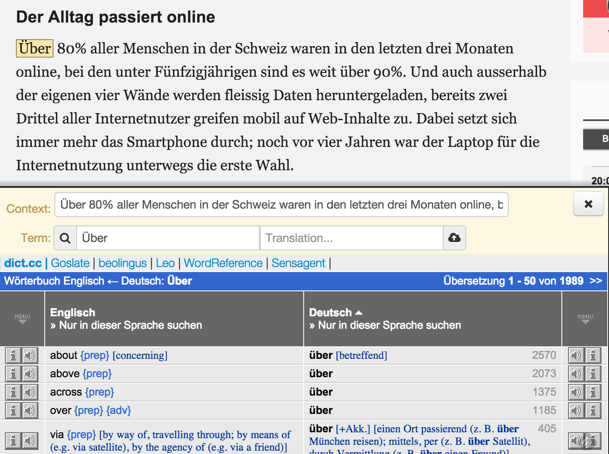
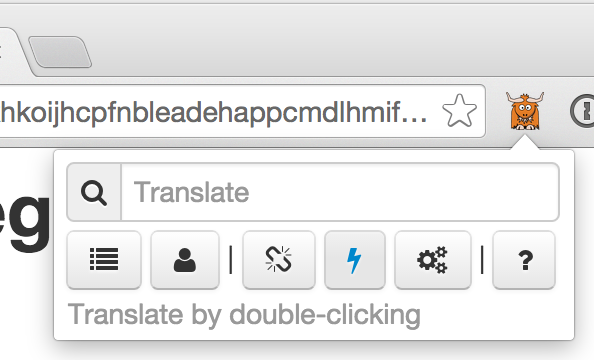

The Zeeguu Plugin
~Version: 1.280~
Overview
The plugin provides you with translations for the words that you are looking up. It also automatically uploads to your online profile the word, translation, and context if you save them. In this way, you can get later personalized exercises and better translations.
Note: The next section assumes that you know what a zeeguu profile is, and that you have created an account on the Zeeguu website, installed the plugin locally, and declared a langauge that you are learning.
Translating Words in Pages
When you hold Alt pressed and select a word a popup appears with the corresponding translation as you can see in the figure below where the user has selected the German word Über (which in English means About).

Note: if you double-click a word, the entire word gets selected and this is faster than actually dragging the cursor to select.
If you are happy with the translation, and want to save the word to your online profile, click on the save link in the popup. The popup disappears, and the word with the translation are uploaded to your online profile.
Showing the Full Dictionary
If for some reason you are not convinced of the translation, or if you want more synonyms, and if you have alternative dictionaries installed for your language (TODO: link to section on installing dictionaries) you can click on the More link. This will pop-up a dictionary frame as in the figure bellow:

Fast Mode
Since for some of us, holding Alt pressed to get a definition is too much. To be able to translate a word only on selection without pressing Alt, you can enable the Fast Mode from the popup menu as you can see in the figure below:

Contact Us
If you have any questions regarding the plugin, please do not hesitate to contact us at the following email address: zeeguu@mir.lu
Version History
Version 1.280
- Refactored the interaction. Now using popups with one word translation when available.
- First draft of this page.
Version 1.270
Added a help button.
When user clicks on the toolbar button and the user must login, the redirect opens the popup instead of the dictionary.